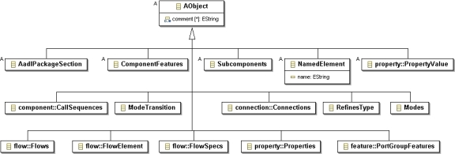
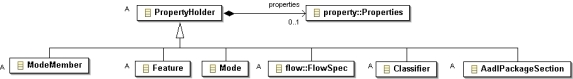
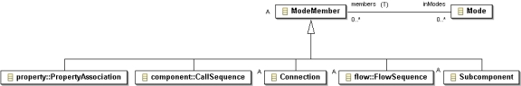

Previous
Next
Previous
Next 
| 4.2 Hierarchy of Abstract and Concrete Classes |
The AADL meta model is defined by a set of abstract
and concrete classes. Abstract classes
represent common characteristics for a set of subclasses. Concrete classes are instantiated as
objects in the AADL model.
Figure 10 introduces the top-level set of abstract classes.

Figure 10 Abstract Class Hierarchy
The AObject class is the root class of all objects
of an AADL model. This class introduces the
comment as a multi-valued string attribute to hold AADL comments that are included in an AADL
model.
The NamedElement class represents AADL model objects
that are identified by name. It
introduces a name attribute as a string value. For some AADL model objects the name is required,
e.g., a component type, while for others the name is optional, e.g., a connection.
The PropertyHolder class represents those AADL
model objects that can have AADL property
association declarations. Note that for specific property definitions the legal owners of a property
value for the defined property are specified by the property owner categories in the applies to
clause of the property definition.
The ModeMember class represents those AADL model
objects that are mode-specific. Mode-
specific AADL model objects are those whose declarations are allowed to have in mode
statements.
The Classifier class is a subclass of PropertyHolder
and represents classifier declarations such as
component classifiers and port group types. Classifiers are PropertyHolders, but not
ModeMembers.
The ComponentClassifier class is a subclass of
Classifier and represents component type, and
component implementation declarations.
The ComponentType and ComponentImpl classes
are subclasses of ComponentClassifier and
represent component types and component implementations, respectively.
The PortGroupType class is a subclass of Classifier
and represents port group types as definitions
of the structure of port groups.

Figure 11 AObject Class and its Unnamed Subclasses
All AADL model objects have AObject as their abstract
super class. This means that all AADL
model objects can contain comments as attribute values. Figure 11 shows those AADL object
model classes that are direct subclasses of AObject. These concrete subclasses are not
subclasses of NamedElement, i.e., they instantiate to AADL model objects that are unnamed.
The
concrete subclasses of the shown abstract classes, with the exception of NamedElement, also
instantiate to unnamed AADL model objects.
The classes ending named with a plural, such as FlowSpecs,
Properties, or Connections,
represent subclauses in a classifier. As explained previously, these are explicitly modeled to
allow
recording of optional subclauses and subclauses with no content, as specified by the reserved
word none.

Figure 12 NamedElement Class and its Subclasses
Figure 12 shows the direct subclasses of the NamedElement
class. They represent those AADL
object model classes that have a name. Concrete subclasses of abstract subclasses of
NamedElement are shown in subsequent figures.

Figure 13 PropertyHolder Class and its Subclasses
Figure 13 shows those classes that can have properties
associated with them, i.e., are subclasses
of the PropertyHolder class. A property holder can contain zero or one Properties object that
itself
holds a collection of property associations.

Figure 14 ModeMember Class and its Subclasses
Figure 14 shows the abstract class ModeMember.
A ModeMember object can refer to multiple
Mode objects via inModes and a Mode object refers to all objects that are members of it.
The
members reference is transient, i.e., not stored persistently in XML. Any object of concrete
subclasses of this class can be declared to be a member of specific modes. The ModeMember
class is a subclass of PropertyHolder. PropertyAssociation and CallSequence
are concrete
classes, while Connection, FlowSequence, and Subcomponent are abstract classes.